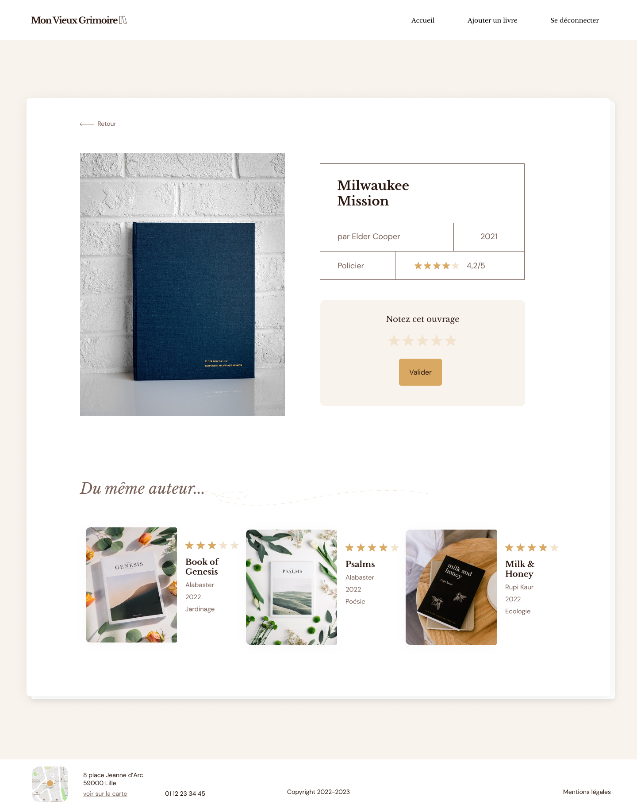
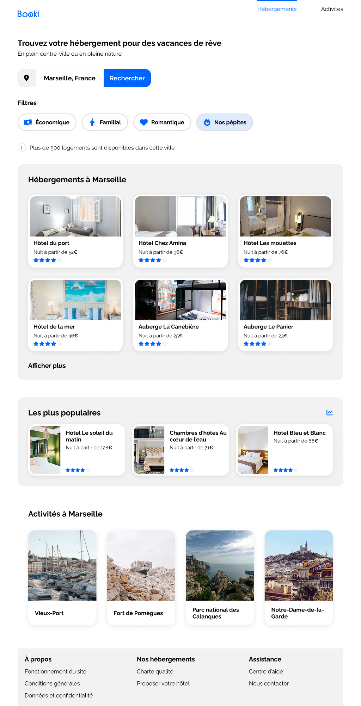
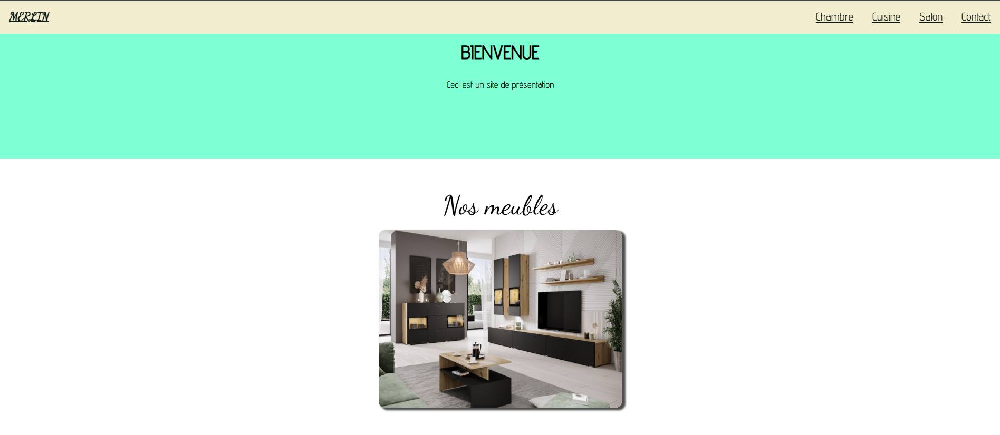
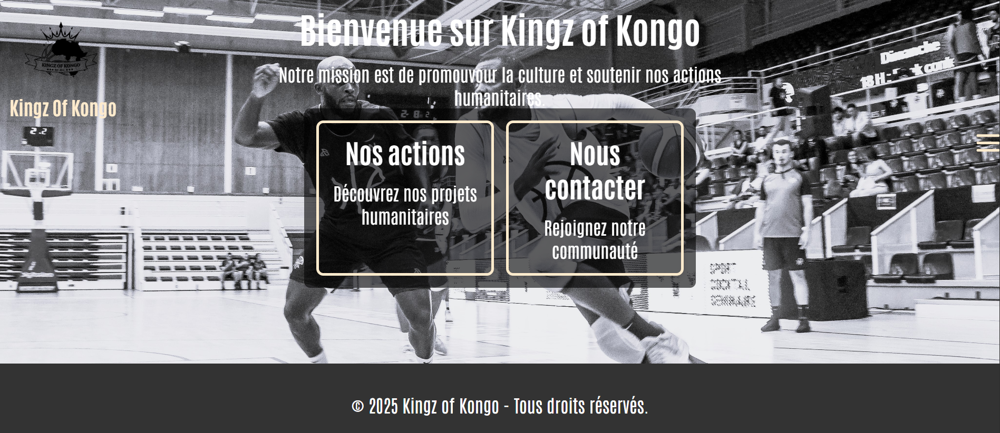
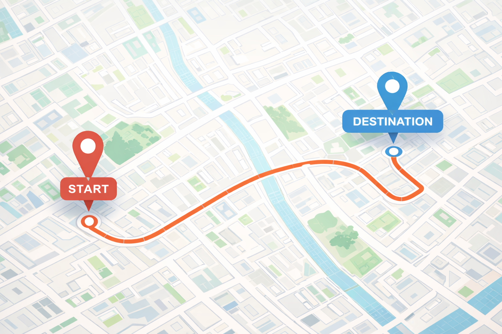

PRÉSENTATION
Développeur autodidacte passionné, je conçois des scripts, outils, logiciels, applications web et systèmes embarqués.
Curieux et polyvalent, je progresse chaque jour dans le développement full-stack, l’IoT et la cybersécurité offensive.
Site Web
Sophie Bluel – Portfolio d’architecte d’intérieur
Création d’une page web dynamique en JavaScript à partir d’une API REST.
Mise en place d’une galerie de projets filtrable par catégories,
génération dynamique du DOM, authentification administrateur
et interface de gestion permettant l’ajout et la suppression de projets.
Nina Carducci – Débogage et optimisation SEO
Analyse et correction de bugs JavaScript, optimisation des performances
(lazy loading, compression, accessibilité),
amélioration du référencement naturel (SEO),
audit avec Lighthouse et Wave,
et correction des problèmes d’accessibilité (ARIA, contrastes, balises sémantiques).
KASA – Application web de location immobilière
Développement d’une application web en React avec une architecture en composants.
Mise en place du routing avec React Router,
gestion des états,
affichage dynamique des données,
composants interactifs (carousel, collapse),
et respect des contraintes UX/UI.

Le Vieux Grimoire – Backend Node.js / Express
Développement du back-end d’un site de notation de livres avec Node.js et Express.
Création d’une API REST sécurisée,
gestion de l’authentification JWT,
stockage des données avec MongoDB et Mongoose,
gestion des images,
et implémentation des règles métiers (notes, permissions, sécurité).

Booki – Intégration d’une maquette responsive
Projet réalisé dans le cadre de la formation Développeur Web chez OpenClassrooms.
Intégration fidèle d’une maquette Figma en HTML5 et CSS3,
avec mise en place d’un design responsive desktop, tablette et mobile.

Site vitrine – Magasin de meubles et électroménager
Création d’un site web fictif présentant différents produits.
L’objectif est de démontrer comment une interface claire et structurée
peut faciliter la navigation et la mise en valeur d’un catalogue de produits.

Site vitrine – Association de basketball
Première version d’un site vitrine développée lors d’un stage.
Frontend réalisé avec React,
backend avec Express.js,
visant à présenter l’association et ses activités.

Système d’authentification – React
Développement d’un site d’authentification intégrant
l’inscription, la connexion et la déconnexion des utilisateurs,
avec gestion des états et des formulaires en React.
Projets-Python

Script d’automatisation Selenium
Le script il ouvre Google Maps, recherche un lieu spécifique (ici « La Tour Eiffel »)
clique sur le bouton d’itinéraire, et interagit avec l’interface pour afficher les options de trajet.
Web scraper Développement d’un bot Python capable de générer automatiquement des fiches produits Word à partir d’une liste de numéros SKU fournie dans un fichier Excel.
Le script récupère pour chaque produit les informations suivantes depuis un site web : titre, image, description, spécifications techniques et documentation PDF.
Il utilise les bibliothèques Playwright, openpyxl, requests et python-docx, et peut être réadapté à d'autres sites ou formats de fiche.
Voir le projet sur Gumroad
Script d'automatisation Développement d'un script automatisé pour envoyer des notifications SMS à mon téléphone lors de la réception d'un e-mail,
en utilisant les conseils et l'assistance de ChatGPT (Python, Tulio, ExchangeLib, PushBullet) (EN COURS)